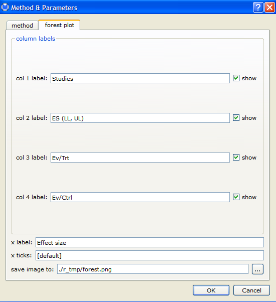

To set options for forest plots in the Methods & Parameters dialog, select the forest plot tab.

In the forest plot pane, you can specify labels for the following columns displayed on the forest plot:
- col 1 label - The study names column
- col 2 label - Estimates and confidence intervals
For binary data only you can also specify the following column labels:
- col 3 label - Raw data for number of events and subjects in the treatment group.
- col 4 label - Raw data for number of events and subjects in the control group.
To prevent a column or columns from being
displayed in the forest plot, clear the show check boxes corresponding to those columns.
You can also specify the following forest plot options:
- x label - the label on the x-axis
- x-axis lower bound - Lower bound for the range of data displyed in the plot. Note: x-axis lower bound must be less than the effect size for all studies - otherwise, the setting is ignored.
- x-axis upper bound - Upper bound for the range of data displyed in the plot. Note: x-axis upper bound must be greater than the effect size for all studies - otherwise, the setting is ignored.
- x ticks - Tick marks for the x-axis
- save image to: - The path to the file in which the forest plot is saved
Back to top
 | Metrics | | |